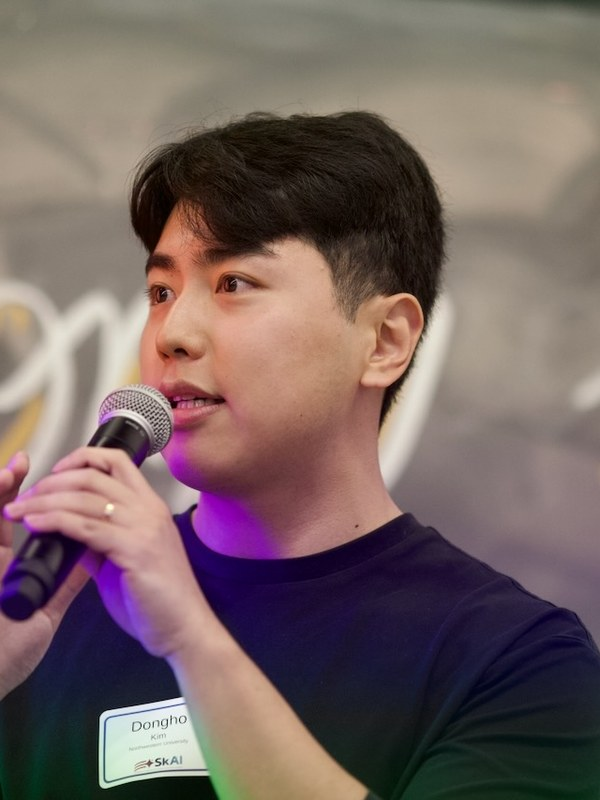

Dongho Kim
I'm an M.S. student in Statistics & Data Science at Northwestern University, advised by Prof. Han Liu in the MAGICS Lab. I also collaborate with the NSF–Simons SkAI Institute and am applying to PhD programs for Fall 2027.
My research interest is reliable AI: making the reliability of AI systems verifiable and measurable, rather than assumed. As AI becomes both an instrument for social science and an actor in social and economic systems, I work in three directions: agentic systems with built-in verification (SPINE, co-first author), evaluation of foundation models on challenging scientific data (StarEmbed, ICML 2026), and verified agentic workflows for computational social science (Sci2Pol-Agent, ongoing).

I will be at ICML 2026 in Seoul (July 6–11), presenting StarEmbed (poster: Tue July 7, 2:00–3:45 PM, Hall A).
If you work on reliable agents, validity of AI outputs, or computational social science, I would love to talk:
donghokim2030@u.northwestern.edu
Research
Reliable and trustworthy agentic AI
Agentic systems that harness language models for high-stakes work, with reliability built into the system itself: evidence-grounded outputs, specialized verifier roles, and validation-gated execution rather than prompt engineering alone. (SPINE)
Foundation models for challenging scientific data
Evaluation and development of foundation models for real-world time series with irregular sampling, noise, and distribution shift: benchmarking when learned representations can be trusted, and pretraining approaches that improve reliability on scientific data. (StarEmbed, ICML 2026; ongoing)
Computational social science
Computational methods for understanding human behavior, team dynamics, and economic outcomes, including verified agentic workflows for high-stakes applications such as science-to-policy communication. (Sci2Pol-Agent)
News
- Presenting StarEmbed at ICML 2026 in Seoul (poster).
- Joined the NSF–Simons SkAI Institute collaboration on foundation models for astronomical time series.
- Started my M.S. at Northwestern University; joined MAGICS Lab (Prof. Han Liu).
Publications & Preprints
SPINE: Bridging the Cyber-Physical Gap with Agentic AI
M. Ham*, D. Kim*, C. Lee*, J. Wang*, J. Zhao, G. Ye, S. Park, M. J. Kim, Y. Zhang, H. Liu (*equal contribution)
Preprint2026
StarEmbed: Benchmarking Time Series Foundation Models on Astronomical Observations of Variable Stars
W. Li*, H.-Y. Chen*, N. Rehemtulla*, V. Shah, D. Kim, D. Wu, Q. Lin, A. Miller, H. Liu (*equal contribution)
Ongoing
Sci2Pol-Agent: Verification-First Agentic Harness for Science-to-Policy Writing
A training-free multi-role harness around a fixed LLM. The system routes each draft through evidence extraction, support checking, local revision, and format control, improving Sci2Pol-Bench performance with gains concentrated in verification. Current direction: treating verifier judgments as noisy measurements so AI-writing evaluations can support statistically valid claims about output accuracy.
Ongoing · 2026